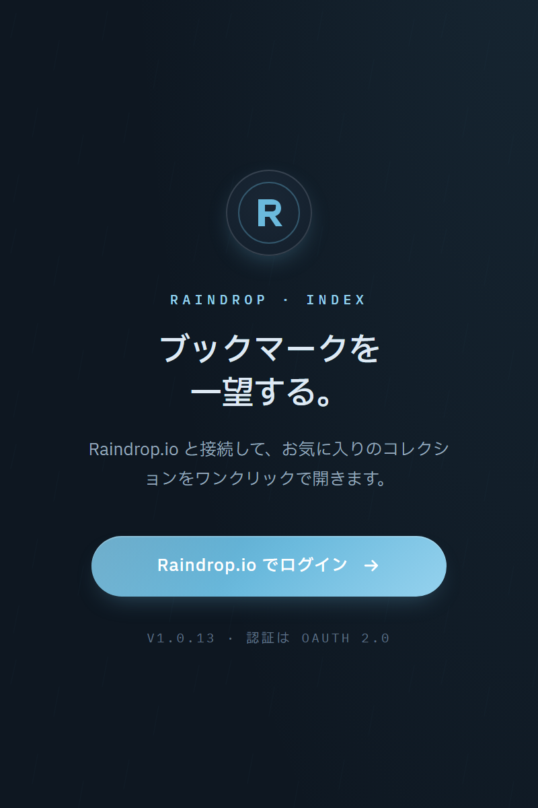

1 クリックで一覧
サイトを開かずに、ツールバーから直接ブックマークへ到達します。
Raindrop.io launcherChrome / Firefox
Raindrop.io に貯めたブックマークを、ツールバーのアイコンからそのまま検索して開く。サイトを開いてから探す時間をなくします。

WHAT IT DOES
Raindrop Shortcuts の基本仕様
OS のダークモード設定に自動追従するほか、ライト / ダーク / 自動を手動でも切り替えられます。
拡張機能から Raindrop.io にログインして、アカウントを接続します。
設定画面のコレクションツリーから、普段使うフォルダを指定します。
ツールバーのアイコンをクリックして一覧表示。キーワードを打てばその場で絞り込めます。
FEATURES
favicon・タイトル・ドメインだけの 1 行表示にすることで、数百件のブックマークでもスクロール量を抑えて見渡せます。
対象と処理の一覧
| 項目 | 内容 | 状態 |
|---|---|---|
| コレクション | 選択したフォルダのみ | SCOPED |
| 検索 | タイトル / ドメイン | LIVE |
| 表示 | favicon + 1 行 | COMPACT |
| テーマ | ライト / ダーク / 自動 | AUTO |
OPEN BEHAVIOR
target: new tab | current tab
configurable
クリック時の挙動を設定から切り替えられる
DESIGN PRINCIPLES
サイトを開かずに、ツールバーから直接ブックマークへ到達します。
1 行表示で、大量のブックマークでも見渡せるレイアウトにしています。
接続先はあなたの Raindrop.io アカウント。第三者に共有しません。
INSTALL
Raindrop.io のアカウントが必要です。Chromium 系ブラウザと Firefox 128 以降に対応。MIT License。